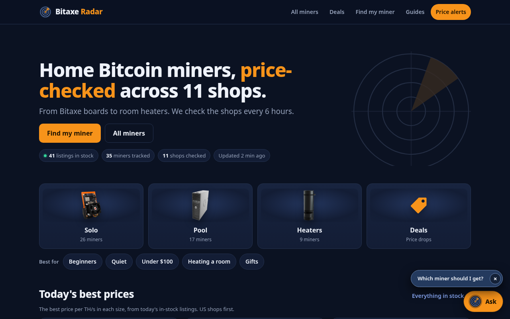

Building applied AI on a live product, while training in TripleTen's AI/ML bootcamp.
Hi, I'm Shervin Wilkinson — an aspiring AI engineer in Indiana
and a student in TripleTen's AI/ML bootcamp. I build and run
Bitaxe Radar, a live price
tracker for home Bitcoin miners. The site has an “Ask Bitaxe Radar”
chat, built on the Anthropic Claude API, that looks up today's
prices through tool calling and is checked by a 32-case eval set.
Before pivoting into AI, I built a technical foundation through
CompTIA certifications (A+ and ITF+) and Digital Media Technology
studies. I currently work under contract at Roche through eTeam,
and I bring the same reliability, communication, and problem-solving
from every role I've held into this work. I first built this
portfolio in July 2026 with Cursor, to learn how to direct an
AI coding agent.
Skills
Tools I use on Bitaxe Radar and in bootcamp, plus what I'm learning next.
Python
Price collector, site builder, 160 unit tests, and the eval grader for Bitaxe Radar.
JavaScript
The Ask chat on the site and the Cloudflare Worker that calls Claude and runs tools.
SQL & Relational Databases
Querying and joining data from relational databases, from TripleTen coursework.
Anthropic Claude API
Live chat with prompt engineering, structured JSON answers, and multi-turn history.
Tool Calling
Claude searches, looks up, or compares miners; our Worker runs the tools on live price data.
Evals
A 32-case automatic quiz for the chat. Code grades answers against today's prices.
REST APIs & JSON
The chat is a REST endpoint that accepts a question and returns a structured JSON answer.
Docker, Docker Hub & Kubernetes
Used in TripleTen, including a project built with containers and Kubernetes.
Git, GitHub & GitHub Actions
CI runs tests on every push. A workflow collects prices and deploys Bitaxe Radar every 6 hours.
Cloudflare Workers
Serverless backend for the Ask chat and price-alert signups, including rate and spend caps.
AI Coding Agents (Cursor)
I build by directing AI coding agents. This portfolio site was my first Cursor project.
Currently Learning
AWS, and RAG — letting a model search written guides, not only structured price data.
Projects
A live product with applied AI, this portfolio site, and data work from TripleTen.
Featured · Live product
Bitaxe Radar
A live price and stock tracker for home Bitcoin miners, at
bitaxeradar.com.
A Python collector pulls shop listings, and GitHub Actions
rebuilds and deploys the site to GitHub Pages every 6 hours.
A Cloudflare Worker serves a REST/JSON API for alerts and for
“Ask Bitaxe Radar,” a Claude chat with prompt engineering,
structured JSON output, multi-turn history, and tool calling.
Guardrails include a question length limit, a rate limit, a
daily cap, and a $10/month spend cap. A 32-case eval set
scored 30/32 on the live chat, then 32/32 after fixes for a
labeling bug and a prompt-injection hole. The repo has 160
Python unit tests plus Worker tests.

Tool calling: Claude ranks, looks up, or compares miners; code does the math on live data
Evals: 32 questions, with an answer key computed from today's prices, graded by code
The eval caught two real bugs — a wrong “from our data” label, and a hijack that made the bot answer like a pirate — and both are fixed live
Automated tests and a GitHub Actions collect-and-deploy pipeline
I trained a Random Forest on the Titanic passenger list
(81.6% accuracy), wrapped it in a FastAPI web service,
packaged it with Docker, and published it on Docker Hub.
Anyone can run it with one command. Includes Kubernetes
deployment files, automated tests, and CI.
This website. I built it in July 2026 with Cursor, as a
TripleTen project to learn how to work with an AI coding
agent. It is a static HTML and CSS site on GitHub Pages.
The design is the original one from that first build; the
content now reflects my current work, including Bitaxe Radar.
Directed Cursor to design and build a full resume portfolio site
Shipped it to GitHub Pages at yostoo.github.io/my-portfolio
Kept the original layout, colors, type, and motion while updating the content
Analyzed usage and revenue for a telecom operator with two prepaid plans
(Surf and Ultimate) using data from 500 clients. Cleaned and prepared
call, message, internet, and user datasets; calculated monthly usage and
revenue per customer; compared customer behavior with descriptive
statistics and histograms; and tested hypotheses about revenue differences
between plans and between the NY–NJ region and other areas.
Prepared messy real-world data and applied Megaline’s rounding rules for minutes and data
Built monthly revenue metrics from plan fees and overage charges
Compared Surf vs Ultimate behavior using mean, variance, standard deviation, and distributions
Ran hypothesis tests to support advertising-budget recommendations
Cleaned and explored a modified Instacart grocery-delivery dataset to report
on how customers shop. Worked across five related tables (orders, products,
order items, aisles, and departments), fixed nonstandard CSV formatting,
handled missing and duplicate values, and built visualizations that show
when people order, how often they reorder, and which products are most popular.
Roles where I've built reliability, teamwork, and problem-solving under pressure.
Material Handler
E-Team (Contractor at Roche) · Indianapolis, IN
January 2026 – Present
Operated equipment to unload and stage materials in a high-volume environment
Processed and organized inventory with high accuracy, including sorting, labeling, and quality checks
Collaborated with teammates to resolve issues and meet daily productivity targets under tight deadlines
Adapted quickly to shifting priorities while maintaining organization and safety standards
Loader
CVS Health Distribution Center · Indianapolis, IN
September 2025 – January 2026
Maintained accuracy and efficiency in a fast-paced, metrics-driven environment
Followed detailed procedures and safety protocols while meeting strict productivity goals
Collaborated with team members to resolve workflow issues and meet daily deadlines
Lube Technician
Valvoline Instant Oil Change · Indianapolis, IN
September 2024 – September 2025
Explained technical services and recommendations clearly to customers
Followed detailed procedures to deliver accurate work in a fast-paced environment
Resolved customer concerns in real time under pressure while maintaining high satisfaction
Kitchen Team Member
GetGo Café & Market · Indianapolis, IN
February 2024 – September 2024
Delivered friendly, efficient customer service in a high-volume environment
Processed orders accurately using POS systems and resolved customer issues quickly
Maintained organized work areas and supported inventory restocking
Technical Support Experience
Hands-on IT practice & projects
Foundation work
First-line troubleshooting for hardware, software, connectivity, and Windows OS issues
Supported users remotely and in person with device setup, account access, and issue resolution
Imaged, configured, and deployed desktops/laptops; built and upgraded PCs
Documented resolutions and procedures for knowledge base and self-service use
Education & Certifications
Formal education, certifications, and current AI/ML training.
TripleTen
AI/ML Engineering Bootcamp · In Progress
Building practical skills in Python, SQL, Docker, Kubernetes, data science, and machine learning, and applying them on a live project with the Claude API, tool calling, and evals.
Robert Morgan Senior High School
Miami, FL · High School Diploma · June 2023
Magnet Program: Digital Media Technology — studied PC hardware, networking, OS fundamentals, and basic IT concepts. Passed CompTIA ITF+ through the program.
CompTIA A+
Certification
Verification ID: 04286ed5fa0e4477a1d7852b5e77525e
CompTIA ITF+
Certification
Verification ID: T3J006DQ4NFEK7M2
Contact
Based in Indiana — open to connecting about AI engineering opportunities and collaboration.